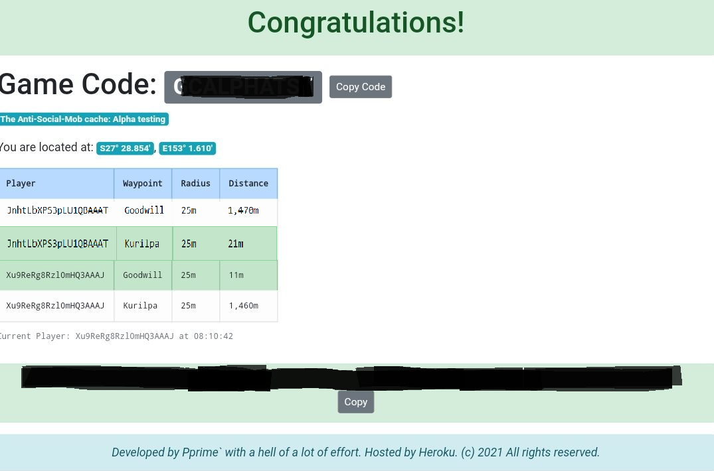

), and each target waypoint shown as a circle. The circles will be coloured according to status:
), and each target waypoint shown as a circle. The circles will be coloured according to status:This is a Geocaching game for multiple players … where there is no need for players to ever meet up in person at all.
You will need a smartphone (Android or iPhone), with active internet connection. One per player. Each smartphone must have Location Services enabled (GPS Satellite tracking). Please see THIS LINK for assistance on that if needed.
This game has TWO (2) Target Waypoints, and therefore needs at least two independent players. To start the game click on the link provided, or open csasm.herokuapp.com/ in a browser and enter in the Geocaching ID Code of this cache.
The game screen will display with information about how many players are active in the game currently, where you are, and how close each player is to each target waypoint. Each player will be given a unique Player code for this game session, and you can see your code directly underneath the table and above the map display.
There is then a map (with options for streetview or satellite view). This will show where you are currently (yellow player icon ), and each target waypoint shown as a circle. The circles will be coloured according to status:
The map updates based on your location as you move, and will re-centre on your location unless you have shifted the map manually to look around. Press the 'Centre on me' button underneath the zoom in/out buttons to re-centre the map on your location.
If at any time you wish to quit the game, a Red 'Quit Game' button persists at the bottom right of all screens.
As soon as all target waypoints are occupied, the screen will display (for those that are occupying a target waypoint at the time) secret reward information - in this case final coordinates of the geocache container. A button is provided to copy that information to your smartphone's memory so you can paste it into another location (for example the final GZ space or personal notes space of your favourite Geocaching application.
Successful players will be removed from the game in the background, meaning any other players not yet there can continue playing separately.
Enjoy!